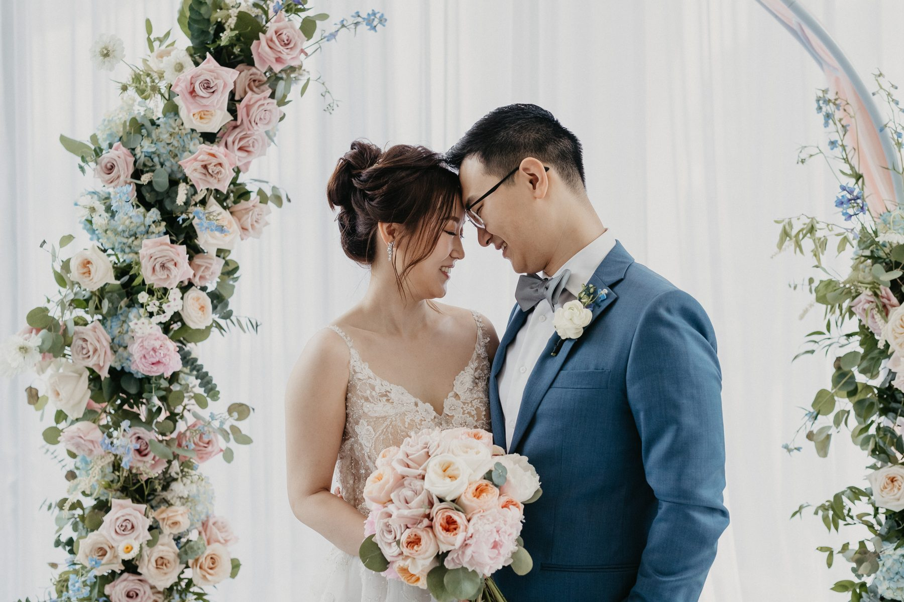
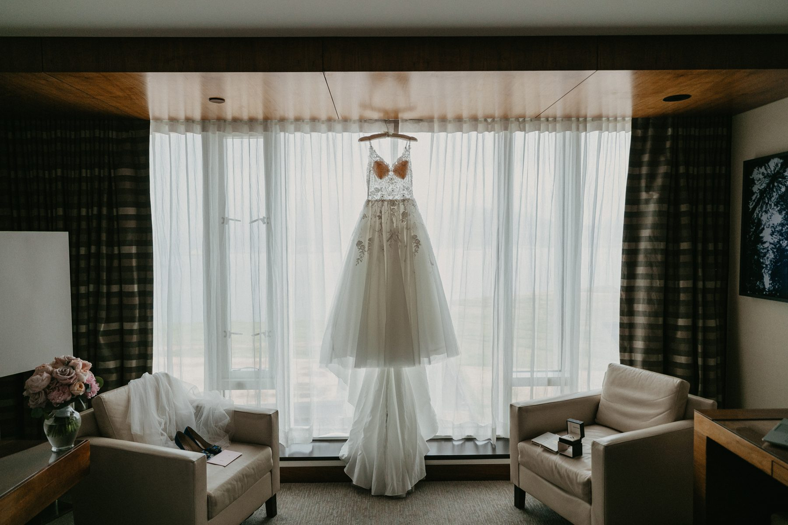
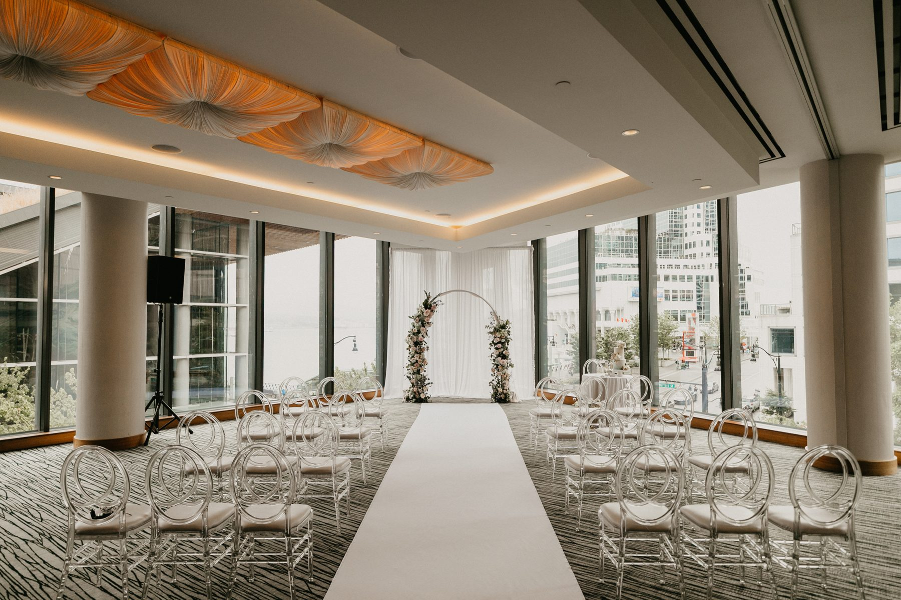
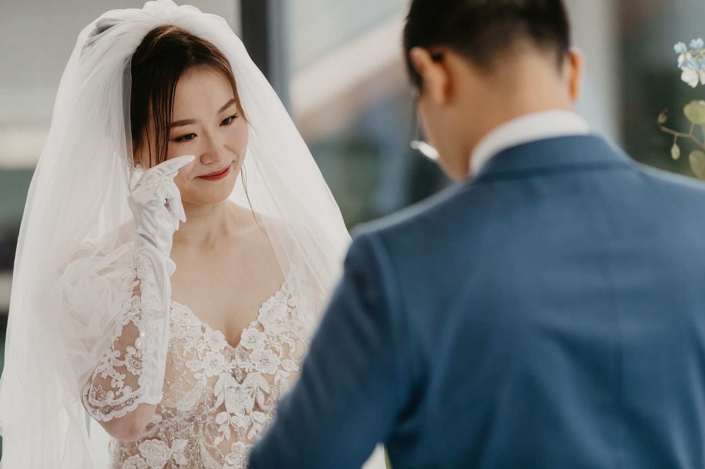
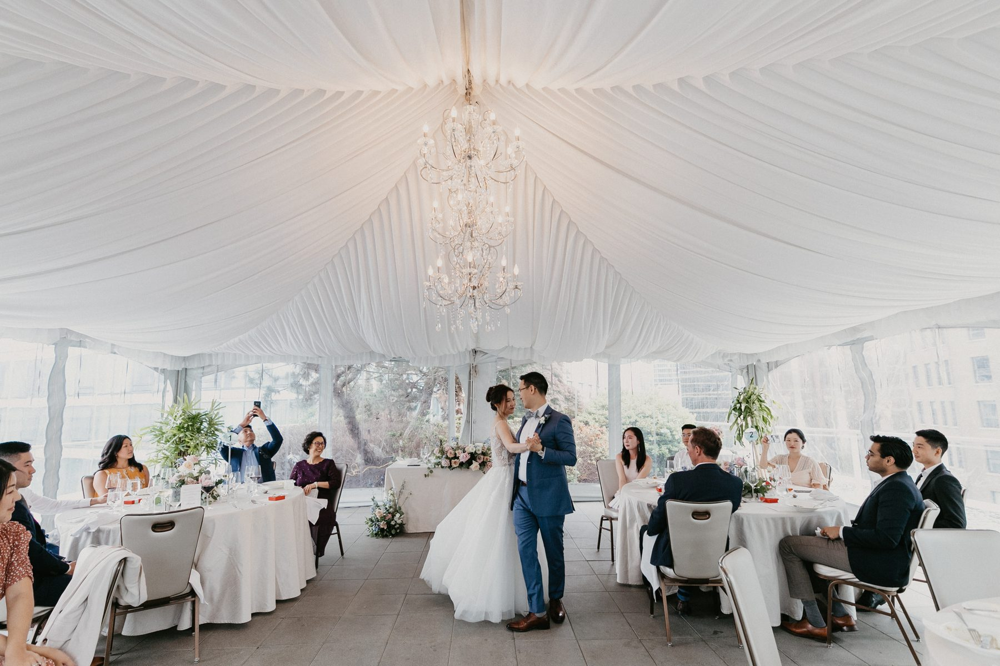

Chelsea and Andrew did not want a wedding that looked like a hotel wedding. Which is funny, because they got married in a hotel.
They picked the Fairmont Pacific Rim, on the Coal Harbour side of downtown Vancouver, and the whole day happened inside about two hundred steps. Room, ballroom, rooftop, dinner. No shuttle buses. No two hour gap where everyone stands around a parking lot wondering where to go.

If you are weighing a downtown Vancouver hotel for your wedding, this one is worth a real look. Here is what it actually gave them.
Most ballrooms are boxes. You light them, you make them pretty, you move on. The Emerald Ballroom is not that. One entire wall is glass, and it faces the towers and the water.
What that means in practice: the ceremony ran on daylight. Soft, even, north facing daylight that flatters everybody, including your uncle who has never once liked a photo of himself. No harsh flash. No orange hotel tungsten fighting the window.

Bright and airy is our whole thing, so we are biased. But this is the practical version of the advice: when you tour a venue, ignore the carpet and look at the windows. Ask what time of day the light hits the room. That single question changes your gallery more than the floral budget does.
An hour before the ceremony, Andrew sat down by a window and read his own vows to nobody. Testing them out loud. His face did a thing.

That frame is one of my favourites from the entire day, and nobody planned it. It was not on a shot list. It happened because we were in the room early, quiet, not asking anyone to do anything.
This is the argument for documentary coverage in one photo. You cannot direct that expression. You can only be standing there when it shows up.
Half of their family could not fly in. So there was a laptop on a stand at the front of the room, and a camera on a tripod beside it, and relatives on the other side of the world watching a wedding at whatever hour it was for them.
I photographed that too. The screen, the propped up phone, the aunt in the front row waving at a webcam.

Some couples are a little embarrassed by the tech and want it kept out of frame. I understand the instinct. I would push back on it gently. In ten years that laptop will not read as a compromise. It will read as the year, and as proof that people who could not be in the room still showed up.
Photograph the day you actually had. Not the one from the mood board.
The ceremony was short. Rings, a kiss, done in under twenty minutes, and the room emptied onto the terrace before the flowers had a chance to wilt.

Short ceremonies photograph better. Not because they are more romantic, but because everything that follows gets more room. Chelsea and Andrew ended up with an unhurried hour for portraits and family groups, which is the part couples always wish they had bought more of.

Also, this happened. Nobody asked for it. Nobody could have stopped it.
The Fairmont Pacific Rim has an outdoor terrace above the street, planted with hedges and trees, ringed by glass towers. It is the closest thing downtown has to a private garden four floors up.

Ten minutes up there gave us the greenery shots most couples drive to Stanley Park for, plus a skyline backdrop you cannot get in a park. On a day with a tight timeline, that trade is enormous. You are buying back an hour of driving.
Reception moved into a white draped room with chandeliers and, again, walls of light. Round tables, blush and cream florals, no heavy uplighting, no colour wash. The room stayed the colour it actually was.

A small thing worth stealing: they kept the head table low and skipped the tall centrepieces. Guests could see each other. Toasts landed. And every photo across the table has faces in it instead of a wall of hydrangea.
Yes, with two caveats.
It is not cheap, and it is downtown, so your guests are paying for parking or booking rooms. Go in knowing that.
What you get for it is a day with almost no dead time, light that does not need rescuing, and a rooftop that saves you a whole travel block. For couples who want their wedding to feel calm rather than logistical, that is a real trade.
Chelsea and Andrew got a wedding that felt like an afternoon with their favourite people, in a room made of windows, with the rest of their family watching from a screen in the corner. That is a good day by any measure.
SimplyWed Studio is a Vancouver wedding and elopement photography studio. Tell us about your date through the contact page and we will talk it through, venue quirks and all.
← Back to the journal